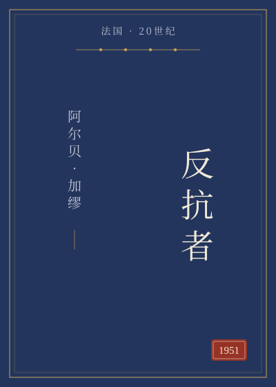
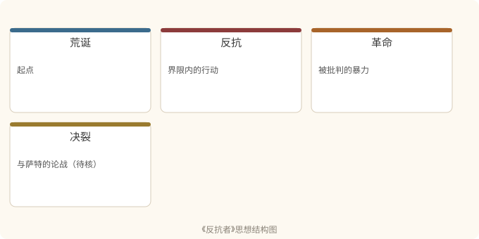

反抗者
一、基本信息
| 作者 | 加缪 |
|---|---|
| 成书/出版 | 1951年出版（作者页 B092 口径：反抗者（1951）） Albert Camus — Encyclopaedia Britannica（百科全书） |
| 国别/地区 | 法国 |
| 时代 | 现当代 · 20世纪 |
| 体裁 | 哲学论集 |
| 语言 | 法语 |

《反抗者》思想结构图（主题·结构图）
二、创作背景
作者页（B092）：加缪 major_works 载'西西弗神话（1942）、反抗者（1951）、堕落（1956）'（B092 作者页定位，详见 juwairen 条核对）。
主题（通说）：从'荒诞'到'反抗'——对革命暴力的批判；引发与萨特的公开决裂（通说待核）。
三、内容脉络
'反抗者'的定义与历史：从形而上的反抗到革命暴力（通说待核）。
'因此反抗而非革命'（论旨通说待核）。
四、主要人物表
| 人物 | 身份 | 说明 |
|---|---|---|
| 加缪 | 论者 | 荒诞→反抗 |
五、主题与艺术特点
- 反抗的界限（通说）。
- 对'历史主义'的批判（通说待核）。
- 与萨特的决裂（通说待核——《现代》杂志1952年论战）。
六、影响与评论
- 作者页：加缪论著谱系（B092 作者页口径）。
Albert Camus — Encyclopaedia Britannica（百科全书） - 冷战思想史的标志性论战（通说待核）。
Albert Camus — Encyclopaedia Britannica（百科全书）
七、阅读建议
难点
- 思想史论战背景。
- '反抗'与'革命'的概念区分。
- 《反抗者》（上海译文出版社吕永真译本，通说待核）。
- 法文原版（Gallimard）。
先《西西弗神话》后本作。
八、待核实
- 与萨特论战（1952年《现代》）细节核对。
- 章节结构核对。
- 吕永真译本信息核对。